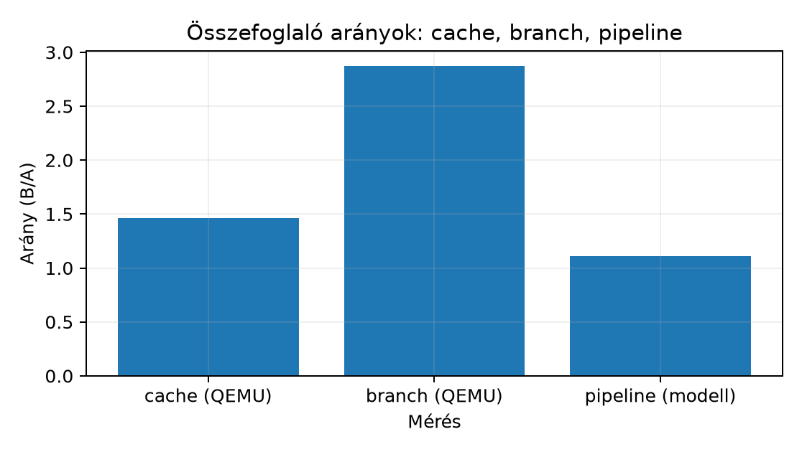

Egy assembly-optimalizálás akkor válik mérnöki döntéssé, ha a
„gyorsabbnak tűnik” helyett mérhető, ismételhető és értelmezhető adatunk
van. A C-fejlesztő gyakran egyetlen time-futásból
következtet, pedig a modern AArch64 rendszerben az eredményt
cache-állapot, frekvencia-skálázás, ütemező, megszakítások és a QEMU TCG
emulációs sajátosságai is torzítják. Ez az alfejezet egy
újrafelhasználható mikrobenchmark-sablont ad, és megmutatja, hogyan kell
az eredményt táblázatban, ábrán és mérnöki korlátokkal együtt közölni. A
fejezet korábbi mérései — cache-viselkedés a049,
pipeline-akadályok a050, elágazás-előrejelzés a051 — csak közös statisztikai keretben
hasonlíthatók össze. A NEON-mérés tanulsága a048
szintén ide fut ki: gyorsulást csak azonos bemeneten, ismételt futással,
mediánnal és szóródással szabad közölni.
Mikrobenchmark: kis, izolált kódrészlet (kernel) ismételt, kontrollált futtatása, amelynek célja egy konkrét gépi szintű hatás — például memóriahozzáférési minta, adatfüggőség vagy elágazás-kiszámíthatóság — relatív költségének becslése. Nem azonos egy teljes alkalmazás benchmarkjával: itt nem a felhasználói élményt, hanem egy mechanizmust mérünk.
A sablon A64 ISA-szemléletű, Linux user-mode környezetben fut:
qemu-aarch64 alatt vagy natív AArch64 hoston. Előfeltétel,
hogy a kernel önmagában is összeálljon, a mérési kör pedig képes legyen
a hőmérséklet, frekvencia és rendszerterhelés legalább kvalitatív
kontrolljára. QEMU-ban a kapott idő emulációs idő, nem
target-ciklusszám; a QEMU TCG nem modellezi hardverhűen a cache-t, a
pipeline-t és a branch predictort. Ezért a mikrobenchmark QEMU-ban
elsősorban algoritmikus és utasításszámbeli különbségeket mutat,
mikroarchitektúra-hatást csak natív AArch64 hardveren lehet
validálni.
A mérési lánc négy részből áll: kernel, harness, statisztika, értelmezés. A kernel a mérendő assembly vagy C függvény. A harness méri az időt és ismétel. A statisztika mediánt, átlagot, interkvartilis terjedelmet (IQR) és kiugró értékeket számol. Az értelmezés a kontrollkísérletekkel együtt mondja meg, mit jelent az adat.
A sablon kötelező lépései:
Bemelegítés (warm-up). Az első futások feltöltik a cache-t, a TLB-t, a branch predictorokat, és QEMU-ban a TCG translation cache-t. A bemelegítő futásokat nem mérjük, csak a rendszer állapotát visszük közel egy stabil pontra. Általában 3–10 bemelegítés elég, de a pontos szám a kernel hosszától függ.
Ismétlés. Egyetlen mérés helyett sok mintát veszünk. Egy mintán belül a kernel többször fut (belső iteráció), hogy az idő nagyobb legyen, mint az óra felbontása. A mintákból statisztikát számolunk. A cél nem a legjobb vagy legrosszabb érték, hanem a jellemző érték és a szóródás.
Medián és átlag. A medián robusztus a szélsőséges értékekre; az átlag érzékeny rájuk. Mindkettőt érdemes közölni. Ha a medián és az átlag lényegesen eltér, valószínűleg kiugró értékek vagy aszimmetrikus eloszlás van.
Kiugró érték (outlier) kezelése. Egyetlen mérés nem elég, mert egy megszakítás, laphiba vagy frekvenciaváltás könnyen 10–100× torzít. Az IQR-alapú szabály: , kiugró az az érték, amely kívül esik a intervallumon. A kiugrókat nem kell feltétlenül törölni; számoljuk meg, és közöljük. A hallgatói jegyzőkönyvben a nyers minták is maradjanak meg.
Kontrollmérés. Minden kísérlethez tartozzon baseline: például üres ciklus, azonos hosszú de független lánc, vagy szekvenciális hozzáférés. Az arány csak azonos feltételek mellett értelmezhető.
Munkakönyvtár: ~/arm-labor/a64/a052/ —
az alfejezet minden laborfájlja ide kerül, és minden parancs innen
futtatandó (a könyvtárrendet a Labor-alapkörnyezet alfejezet írja le).
mkdir -p ~/arm-labor/a64/a052
cd ~/arm-labor/a64/a052Az alábbi A64 assembly kernel egy long tömböt összegez,
megadott bájt-lépéssel. stride=8 szekvenciális,
stride=64 cache-line léptetésű hozzáférést jelent (64
bájtos cache-sort feltételezve). A kernel önmagában nem tartalmaz
cache-optimalizálást; éppen a memóriahozzáférési minta mérése a cél. A
lab-a052-sum.S tartalma:
// lab-a052-sum.S — A64 ISA, AArch64 Linux; GNU as.
// long lab_sum_stride(const long *p, long n, long stride)
// x0 = p, x1 = n, x2 = stride bájtban. Levélfüggvény, CFI nélkül (lásd a029).
.text
.p2align 2
.global lab_sum_stride
.type lab_sum_stride, %function
lab_sum_stride:
mov x3, #0 // sum = 0
cmp x1, #0
b.le 2f
1:
ldr x4, [x0] // A64: 64 bites betöltés
add x3, x3, x4
add x0, x0, x2 // következő cím
subs x1, x1, #1
b.ne 1b
2:
mov x0, x3
ret
.size lab_sum_stride, .-lab_sum_stride
.section .note.GNU-stack,"",%progbitsKét kísérlet, két különböző kérdés. Ha az elemszám
rögzített, a nagyobb lépés nemcsak a cache-sorok kihasználását
változtatja meg, hanem a bejárt memóriatartományt is:
elemnél stride=8 mellett 512 KiB-ot, stride=64
mellett közel 4 MiB-ot jár be a kernel, más lap- és TLB-igénnyel. Az
eltérés ezért nem rendelhető kizárólag egyetlen cache-mechanizmushoz. A
harness ezért két üzemmódot ismer:
| Üzemmód | Rögzített | Változik a stride-dal | Mit izolál jobban |
|---|---|---|---|
n (alapértelmezés) |
elemszám, | bejárt tartomány (bytes), érintett lapok száma |
a lépés teljes hatását egy adott elemszámra |
span |
tartomány, 4 MiB | elemszám, | a laponkénti és soronkénti kihasználtságot azonos címtartomány mellett |
Mikor azonos a lapkészlet? A span mód
azonos címtartományt jár be, de az érintett lapok halmaza csak
akkor azonos, ha a stride nem nagyobb a lapméretnél (4 KiB lapokon pl.
stride = 8 és 64: mindkettő mind az 1024 lapot érinti).
stride = 8192 esetén
elem csak minden második lapot érinti (512 lap a 1024-ből), tehát a TLB-
és lapkészlet más; az „azonos TLB-terhelés” állítás
ezért csak a stride ≤ 4096 tartományra érvényes. A teszt
ezért a 8, 64 és 8192 esetet hasonlítja össze, és a harmadiknál a
lapkészlet különbségét is közli.
Egyik kísérlet sem választ le teljesen egyetlen mechanizmust (például
a hardveres előbetöltés mindkettőben szerepet játszhat); a kettő együtt
mutatja meg, mennyi múlik a tartományon és mennyi a lépésen. A napló
ezért minden sorban kiírja az üzemmódot, n-t,
stride-ot és bytes-t.
A C harness bemelegít, ismétel, majd mediánt, átlagot és IQR-t
számol. A mérési időt az ismétlésszámmal és az elemszámmal is osztjuk,
így az egység ns/elem. A lab-a052-bench.c tartalma:
/* lab-a052-bench.c — stride-mikrobenchmark két kísérleti üzemmóddal.
* Használat: lab-a052 STRIDE [n|span]
* n (alapértelmezés): rögzített elemszám, n = LAB_N; a bejárt tartomány a stride-dal nő
* span : rögzített tartomány, bytes = LAB_SPAN; az elemszám n = bytes / stride */
#define _POSIX_C_SOURCE 200809L
#include <errno.h>
#include <stdint.h>
#include <stdio.h>
#include <stdlib.h>
#include <string.h>
#include <time.h>
extern long lab_sum_stride(const long *p, long n, long stride);
#ifndef LAB_N
#define LAB_N (1L << 16) /* 65 536 elem */
#endif
#ifndef LAB_SPAN
#define LAB_SPAN ((size_t)4 << 20) /* 4 MiB */
#endif
#ifndef INNER
#define INNER 1000
#endif
#define WARMUP 3
#define SAMPLES 31
static int cmp_double(const void *a, const void *b) {
double da = *(const double *)a, db = *(const double *)b;
return (da > db) - (da < db);
}
static double now_ns(void) {
struct timespec t;
if (clock_gettime(CLOCK_MONOTONIC, &t) != 0) { perror("clock_gettime"); exit(2); }
return (double)t.tv_sec * 1e9 + (double)t.tv_nsec;
}
static double measure_once(const long *p, long n, long stride) {
volatile long sink = 0;
double t0 = now_ns();
for (int i = 0; i < INNER; i++)
sink += lab_sum_stride(p, n, stride);
double t1 = now_ns();
__asm__ volatile("" : : "r"(sink) : "memory");
return (t1 - t0) / INNER / n;
}
static int usage(void) {
fputs("Hasznalat: lab-a052 STRIDE [n|span]\n"
" STRIDE: pozitiv, sizeof(long)-gal oszthato bajtlepes\n", stderr);
return 2;
}
int main(int argc, char **argv) {
char *end = NULL;
errno = 0;
long stride = (argc > 1) ? strtol(argv[1], &end, 0) : (long)sizeof(long);
if (argc > 3 || errno || (argc > 1 && (!*argv[1] || *end)) ||
stride <= 0 || (size_t)stride % sizeof(long))
return usage();
int fixed_span = 0;
if (argc > 2) {
if (strcmp(argv[2], "span") == 0) fixed_span = 1;
else if (strcmp(argv[2], "n") != 0) return usage();
}
long n;
size_t bytes;
if (fixed_span) {
bytes = LAB_SPAN;
n = (long)(bytes / (size_t)stride); /* (n-1)*stride + 8 <= bytes */
if (n < 2) return usage();
} else {
n = LAB_N;
if ((size_t)stride > (SIZE_MAX - sizeof(long)) / (size_t)(n - 1)) return 2;
bytes = (size_t)(n - 1) * (size_t)stride + sizeof(long);
}
long *p = malloc(bytes);
if (!p) return 1;
for (long i = 0; i < n; i++)
*(long *)((unsigned char *)p + (size_t)i * (size_t)stride) = i;
/* Helyességi ellenőrzés a mérés előtt: a kernel tényleg az n elemet összegzi. */
if (lab_sum_stride(p, n, stride) != n * (n - 1) / 2) { free(p); return 1; }
volatile long sink = 0;
for (int w = 0; w < WARMUP; w++)
sink += lab_sum_stride(p, n, stride);
double t[SAMPLES];
for (int s = 0; s < SAMPLES; s++)
t[s] = measure_once(p, n, stride);
/* Nyers minták: a rendezés ELŐTT, konfigurációval, sorszámmal, egységgel (ns/elem). */
for (int s = 0; s < SAMPLES; s++)
printf("raw mod=%s n=%ld stride=%ld idx=%d t=%.3f ns/elem\n",
fixed_span ? "span" : "n", n, stride, s, t[s]);
double sorted[SAMPLES]; /* a statisztika másolaton számol */
memcpy(sorted, t, sizeof sorted);
qsort(sorted, SAMPLES, sizeof sorted[0], cmp_double);
double sum = 0.0;
for (int s = 0; s < SAMPLES; s++) sum += sorted[s];
double mean = sum / SAMPLES;
double median = sorted[SAMPLES / 2];
double q1 = sorted[SAMPLES / 4];
double q3 = sorted[(3 * SAMPLES) / 4];
int outliers = 0; /* kimondott szabály: Tukey-kerítés, 1,5·IQR */
for (int s = 0; s < SAMPLES; s++)
if (sorted[s] < q1 - 1.5 * (q3 - q1) || sorted[s] > q3 + 1.5 * (q3 - q1)) outliers++;
printf("mod=%s n=%ld stride=%ld bytes=%zu median=%.3f ns/elem mean=%.3f ns/elem IQR=%.3f outliers=%d\n",
fixed_span ? "span" : "n", n, stride, bytes, median, mean, q3 - q1, outliers);
free(p);
return 0;
}Az eredmény felhasználása nem helyességi garancia. A
volatile sink és az üres asm volatile akadály
azt akadályozza meg, hogy a fordító a hívásokat mint felesleges munkát
elhagyja. Arról azonban nem szól, hogy a kernel azt számolja-e, amit
kell, vagy hogy a mért ciklus azonos-e a vizsgálttal. Ezt három külön
lépés adja: a mérés előtti összegellenőrzés
(n * (n - 1) / 2), a
aarch64-linux-gnu-objdump -d --disassemble=lab_sum_stride
ellenőrzése, és az, hogy a kernel külön assembly-fájlban van, így a
C-fordító nem írhatja át.
Build és futtatás a fenti két fájlból, qemu-user módban, illetve natív AArch64 hoston:
aarch64-linux-gnu-gcc -std=c17 -O2 -Wall -Wextra -static \
-o lab-a052 lab-a052-bench.c lab-a052-sum.S
# 1. kísérlet: rögzített elemszám
qemu-aarch64 ./lab-a052 8
qemu-aarch64 ./lab-a052 64
# 2. kísérlet: rögzített memóriatartomány
qemu-aarch64 ./lab-a052 8 span
qemu-aarch64 ./lab-a052 64 span
# natív AArch64 hoston ugyanez qemu-aarch64 nélkül, pl.: ./lab-a052 64 span
# A konfigurációk futási sorrendje ne legyen rögzített: váltogasd vagy fix seeddel keverd,
# őrizd meg a futási sorrendet a nyers adatok mellett, azonos bemelegítéssel, pl.:
# for cfg in 8 64 64 8 8 64; do qemu-aarch64 ./lab-a052 $cfg; done # fordított kontrollmérés is
# Ha a fordított sorrend lényegesen változtatja a következtetést, közöld mérési bizonytalanságként.A kimenet formája (a bytes értékei a fenti definíciókból
számítottak; az időértékek hipotetikusak, nem
mértek):
mod=n n=65536 stride=8 bytes=524288 median=4.20 ns/elem mean=4.31 ns/elem IQR=0.18 outliers=0
mod=n n=65536 stride=64 bytes=4194248 median=4.85 ns/elem mean=5.02 ns/elem IQR=0.27 outliers=0
mod=span n=524288 stride=8 bytes=4194304 median=... ns/elem mean=... ns/elem IQR=... outliers=0
mod=span n=65536 stride=64 bytes=4194304 median=... ns/elem mean=... ns/elem IQR=... outliers=0QEMU-ban a vendég cache-t a TCG nem modellezi, de ez nem azt jelenti, hogy cache-hatás nincs: a mért idő a host és az emuláció együttes költsége, amelyben a host cache-e és az emuláció memóriakezelése is szerepet játszik. Ezért nem jósolunk univerzálisan kis (vagy nagy) különbséget; a hallgató bármelyik QEMU-eredményt elfogadhatóan értelmezi, ha a következtetést az emulációra korlátozza. A célhardver cache-következtetéséhez natív mérés kell. Natív AArch64-en a cache-line léptetés lassulása nagyobb lehet; a mértékét és azt, hogy mennyi jut belőle a tartományra (1. kísérlet) és mennyi a lépésre (2. kísérlet), mérni kell. A példa tanulsága: a sablon képes adatot adni, de az adat értelmezése mindig tartalmazza a platform korlátját és a kísérlet felépítését.
A fejezet három mérése — cache, pipeline, branch — közös táblázatban foglalható össze. Az értékek itt illusztratívak, nem mért hardveradatok.
| Mérés | Változat A | Változat B | Medián A [ms] | Medián B [ms] | Arány | Várt mechanizmus |
|---|---|---|---|---|---|---|
| Cache | szekvenciális | 64 bájtos stride | 42 | 118 | 2,81 | térbeli lokalitás, cache-line kihasználtság |
| Pipeline | független lánc | függő lánc | 31 | 87 | 2,81 | adatfüggőségi stall, latency vs. throughput |
| Branch | rendezett | véletlen | 28 | 73 | 2,61 | branch predictor találati arány, misprediction penalty |
Ugyanez numerikus ábrán:

Az ábra és a táblázat ugyanazt az értelmezési keretet kéri. Először normalizáljunk a baseline-hoz: minden arány az A változat mediánjához viszonyít. Másodszor nézzük az IQR-t: ha az IQR nagyobb, mint a két medián különbsége, a következtetés bizonytalan. Harmadszor ellenőrizzük a kontrollelemeket: cache-nél a munkahalmaz méretét, pipeline-nál az utasításszámot, branch-nél az elágazások számát. Végül a platformot: QEMU-ban a három közül egyik mikroarchitektúra-hatás sem mérhető hardverhűen, ezért a QEMU-eredmény csak relatív, emulációs jelzés.
A mikrobenchmark-sablon nem ad hardverhű ciklusszám-garanciát. Nem alkalmas valós idejű határidők igazolására, mert a legrosszabb végrehajtási idő (WCET) nem mediánból származik. Nem használható különböző mikroarchitektúrák összehasonlítására önmagában: egy Cortex-A76 és egy QEMU TCG által mért idő nem ugyanaz a mérőszám. Nem helyettesíti az alkalmazásszintű benchmarkot, mert a teljes program viselkedését nem írja le. Nem ad biztonsági tanúsításhoz elegendő bizonyítékot. Végül nem megbízható, ha a kernel túl rövid az óra felbontásához, ha a fordító kioptimalizálja, vagy ha a mérést frekvencia-skálázás, termikus throttling vagy zajos szomszédos folyamatok terhelik.
volatile sink,
asm volatile memória-akadály, vagy a függvény külön
assembly fájlban.(magyarázó, alapszint — cél: megértés-ellenőrzés) Fejtse ki, miért robusztusabb a medián, mint az átlag, amikor a mérési sorozatban megszakítások és laphibák vannak. Adjon példát olyan számsorra, ahol az átlag félrevezető, a medián nem.
(implementációs, középszint — cél: rutinépítés)
Egészítse ki a C harness-t
,
és az IQR-alapú kiugróérték-számlálás számításával. Futtassa
stride=8 és stride=64 értékkel, majd készítsen
táblázatot.
(hibakeresési/mérési, középszint — cél:
rutinépítés) A hallgató azt tapasztalja, hogy
stride=8 és stride=64 esetén azonos mediánt
kap, QEMU-ban. Adjon legalább három lehetséges magyarázatot, és
mindegyikhez egy ellenőrző lépést.
(értelmezési, alapszint — cél: megértés-ellenőrzés) A táblázatban a cache-arány 2,81, a branch-arány 2,61. Miért nem szabad azt mondani, hogy „a cache nagyobb hatású, mint a branch”, ha a mérések különböző platformon és különböző kontrollelemekkel készültek?
1. megoldás — Segítség. Képzelj el egy mérési sorozatot, ahol a legtöbb érték közel azonos, de EGYETLEN minta sokszorosan nagyobb (pl. egy megszakítás miatt) — mit tesz ez az átlaggal, és mit a rendezett sorozat középső elemével?
1. megoldás — Teljes megoldás. Ha a sorozat például ns, az átlag ns, a medián ns. A ns egy megszakítás vagy laphiba miatti kiugró érték. A medián azt mondja, hol van a tipikus futás; az átlag a szélsőség miatt eltolódik. Ezért kell mediánt és IQR-t közölni.
2. megoldás — Segítség. A rendezett mintatömbben
és
egyszerűen a negyedelő indexek — ugyanúgy indexelhetők, mint ahogy a
median már most a SAMPLES/2 indexet
használja.
2. megoldás — Teljes megoldás. A rendezett minta
negyedelő pontjai adják
-et
és
-at.
Az IQR
.
A kiugróérték-számlálás feltétele:
x < Q1 - 1.5*IQR || x > Q3 + 1.5*IQR. A táblázatban a
medián mellett az outlierek számát is fel kell tüntetni. Helyes
eredmény: a stride növelése QEMU-ban kicsi vagy nulla különbséget
mutathat, natív hardveren viszont a cache-hatás miatt nagyobb mediánt és
esetleg nagyobb IQR-t ad.
3. megoldás — Segítség. Gondold át külön-külön: mit tud(hat) a QEMU TCG a cache-ről; mekkora a ténylegesen bejárt munkahalmaz a választott -nél; biztos, hogy a fordító valóban lefuttatja a ciklust minden iterációban?
3. megoldás — Teljes megoldás. Lehetséges okok: (a)
a QEMU TCG nem modellezi a cache-t, ezért a stride hatása eltűnik;
ellenőrzés: natív AArch64 futtatás. (b) a munkahalmaz kisebb, mint a
cache, és a stride nem elég nagy; ellenőrzés: növeljük
-t
és a stride-ot. (c) a fordító kioptimalizálta a tömb bejárást;
ellenőrzés: objdump -d a kernel disassemblyjén, és
volatile/asm akadályok ellenőrzése. (d) az óra
felbontása vagy a kernel túl rövid; ellenőrzés: növeljük az
INNER értéket.
4. megoldás — Segítség. Nézd meg a fejezet “Mire NEM használható” szakaszát — mi hiányzik ahhoz, hogy két KÜLÖNBÖZŐ mérési eset arányait közvetlenül összevethesd?
4. megoldás — Teljes megoldás. Az arány önmagában nem összehasonlítható, mert más a mérési platform, más a kontrollelem, és a QEMU nem modellezi egyik mechanizmust sem hardverhűen. A cache-arányt befolyásolja a munkahalmaz mérete, a branch-arányt az elágazásminta hossza és a prediktor állapota. Csak azonos platformon, azonos kernelhosszon és azonos statisztikai protokollal szabad összevetni.
A mikrobenchmark izolált kernel ismételt, statisztikailag kezelt mérése. A sablon bemelegítést, sok mintát, mediánt, átlagot és IQR-t használ; a kiugrókat meg kell számolni, nem eltüntetni. A cache-, pipeline- és branch-mérések közös kerete a baseline-hoz normalizálás, a szóródás ellenőrzése és a kontrollelemek azonosítása. QEMU-ban az idő emulációs idő, mikroarchitektúra-hatás csak natív AArch64-en validálható. A sablon nem ad hardverhű ciklusszám-garanciát, és nem helyettesíti a valós idejű vagy alkalmazásszintű mérést.
Továbbhasznált definíciók:
A linkek és a dokumentumverziók közös állapota az Olvasói útmutató forrásállapot-táblájában van; itt csak az alfejezet saját megállapításai szerepelnek.
master ág
hivatalos user-mode dokumentációja (user/main.html) nem
állít semmit a cache-, pipeline- vagy branch-predictor-modellezésről — a
fejezet szövegében szereplő “a QEMU TCG nem modellezi hardverhűen”
állítás ezért nem egy explicit QEMU-dokumentált korlátból, hanem a TCG
ismert tervezési elvéből (funkcionális, utasításszintű emulátor, nem
cikluspontos szimulátor) következik. A dokumentáció emellett a
master, nem egy konkrét kiadott verzió állapotát
tükrözi.developer.arm.com → support.arm.com
átirányítás megerősített); JS-renderelt oldal, tartalmilag nem
ellenőrizhető automatikus lekéréssel.Ellenőrzési hiányok, amelyek a fenti ellenőrzés után is
ténylegesen fennmaradnak: a lab-a052 mindkét
üzemmódjának működését és argumentum-ellenőrzését helyettesítő
eszközlánccal — zig cc (Clang, musl), Unicorn-alapú AArch64
emulátorban, kisebb
LAB_N/LAB_SPAN/INNER értékekkel —
futtattuk; az ott kapott időket nem közöljük. A QEMU TCG
cache/pipeline/branch modellezésének aktuális részletei, a
clock_gettime(CLOCK_MONOTONIC) tényleges felbontása a
célplatformon, a frekvencia-skálázás és termikus throttling hatása,
valamint a konkrét natív AArch64 hardver viselkedése külön validálást
igényel. Az itt szereplő numerikus értékek hipotetikus, illusztratív
példák, nem mért eredmények.